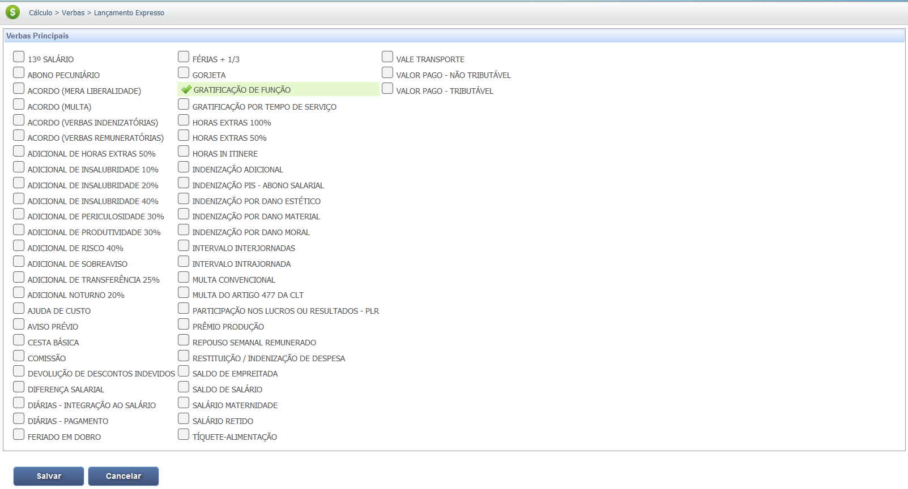
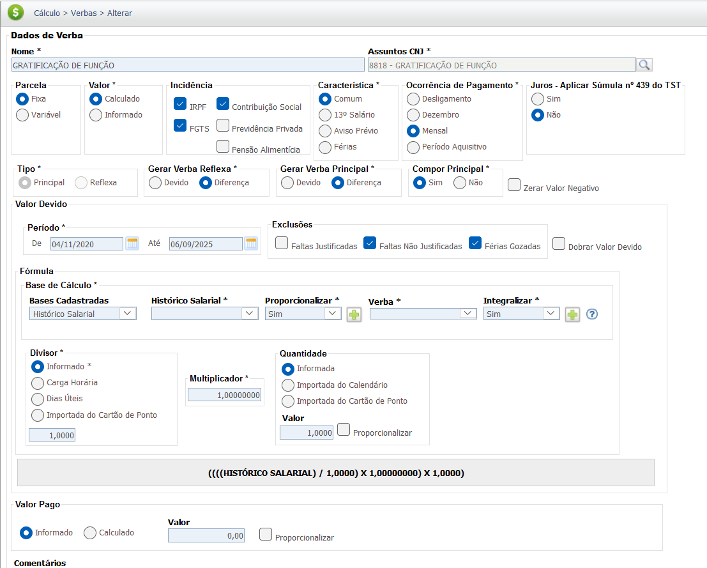
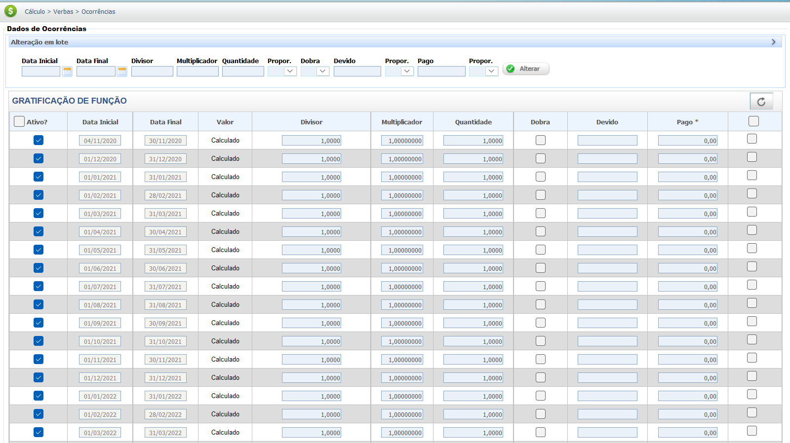

Gratificação de Função
A Gratificação de Função é um acréscimo salarial pago ao empregado que exerce um cargo de confiança (Ex: gerente, coordenador), em adição ao seu salário base. Ela visa remunerar a maior responsabilidade e fidúcia exigidas pelo cargo.
Por ser uma parcela paga em decorrência do contrato de trabalho e de forma habitual, a Gratificação de Função possui natureza salarial e, portanto, deve integrar a base de cálculo de outras verbas trabalhistas.
A regra de incorporação da gratificação de função sofreu uma importante alteração com a Reforma Trabalhista (Lei n.º 13.467/2017). Atualmente, a lei não assegura a incorporação, independentemente do tempo de exercício. Contudo, o Tribunal Superior do Trabalho (TST) garante o direito adquirido para quem completou 10 anos antes da mudança na lei.
Regra de Incorporação da Gratificação de Função
| Situação | Tempo na Função | Resultado da Reversão (Supressão) |
|---|---|---|
| Direito Adquirido (Pré-Reforma) | 10 anos ou mais completados antes de 11/11/2017. | O empregado mantém a gratificação (incorporada ao salário) se a reversão for sem justo motivo (Súmula 372, I, TST). |
| Regra Atual (Pós-Reforma) | Qualquer tempo, incluindo 10 anos ou mais, completados após 11/11/2017. | O empregador pode suprimir a gratificação, com ou sem justo motivo, e ela não será incorporada (Art. 468, § 2º, da CLT). |
Base Legal e Jurisprudência
A natureza salarial e a reversão ao cargo efetivo da Gratificação de Função são regulamentadas pela legislação e jurisprudência a seguir:
Fontes Normativas
Consolidação das Leis do Trabalho (CLT):
-
Artigo 457, § 1º (Natureza Salarial):
"Integram o salário a importância fixa estipulada, as gratificações legais e as comissões pagas pelo empregador."
-
Artigo 468, Parágrafo único (Impossibilidade de Reversão ao Cargo Efetivo - Pós
Reforma):
"Nos contratos individuais de trabalho só é lícita a alteração das respectivas condições por mútuo consentimento, e ainda assim desde que não resultem, direta ou indiretamente, prejuízos ao empregado, sob pena de nulidade da cláusula infringente desta garantia."
"§ 1o Não se considera alteração unilateral a determinação do empregador para que o respectivo empregado reverta ao cargo efetivo, anteriormente ocupado, deixando o exercício de função de confiança."
"§ 2o A alteração de que trata o § 1o deste artigo, com ou sem justo motivo, não assegura ao empregado o direito à manutenção do pagamento da gratificação correspondente, que não será incorporada, independentemente do tempo de exercício da respectiva função."
Jurisprudência
Incorporação da Gratificação
Súmula 372 do TST (Estabilidade Financeira - Anterior a Reforma):
"Percebida a gratificação de função por dez ou mais anos pelo empregado, se o empregador, sem justo motivo, revertê-lo a seu cargo efetivo, não poderá retirar-lhe a gratificação, tendo em vista o princípio da estabilidade financeira."
(Entendimento do TST - Pos-Reforma)
RECURSO DE EMBARGOS EM RECURSO DE REVISTA. ACÓRDÃO PUBLICADO NA VIGÊNCIA DA LEI Nº 13.467/2017. INCORPORAÇÃO DA GRATIFICAÇÃO DE FUNÇÃO RECEBIDA POR MAIS DE DEZ ANOS. DIREITO ADQUIRIDO. IRRETROATIVIDADE DA LEI Nº 13.467/2017.
(...) Nos termos do entendimento desta Subseção, as alterações promovidas no art. 468, § 2º, da CLT pela Lei nº 13.467/2017 (Reforma Trabalhista), que afastaram o direito à incorporação da gratificação de função recebida por dez ou mais anos, não podem atingir o empregado que já havia implementado o direito à incorporação antes da entrada em vigor do novo regramento, sob pena de ofensa ao direito adquirido, previsto no art. 5º, XXXVI, da Constituição Federal."
Base de Cálculo e Deduções
IMPORTANTE: A Gratificação por Função deve integrar o valor da Remuneração Total (Salário-Base + Adicionais + H. Extras + Gratificações ) para fins de cálculo das deduções obrigatórias fiscais e para formação da base de cálculo das Verbas Reflexas.
Definição e Critérios da Base de Cálculo
A Gratificação de Função (GF) é um valor nominal pago mensalmente. A forma de apuração é estabelecida no contrato de trabalho ou norma coletiva, podendo ser definida como:
1 - Um percentual fixo aplicado sobre o salário-base, ou;
2 - Um valor nominal fixo preestabelecido.
Caso a gratificação seja vinculada ao desempenho ou metas, seus valores podem ser variáveis, devendo ser calculada a média para a apuração dos reflexos."
Base de Cálculo da Gratificação de Função, considerando um % sobre o Salário Base:
- Valor Principal: Salário Base.
- Fórmula de Cálculo: Salário Base * % da Gratificação por Função.
Observação: A GF é uma parcela de natureza salarial e deve integrar o salário base para compor a Remuneração Total do empregado.
Exemplo Prático (Valor Bruto)
Composição da Remuneração Total para fins de cálculo de deduções e reflexos:
| Item | Valor / Detalhe |
|---|---|
| Salário-Base | R$ 3.500,00 |
| Gratificação de Função (GF) - 3.500 x 20% | R$ 700,00 |
| Remuneração Total (Base de Cálculo Bruta) | R$ 4.200,00 |
Deduções da Base de Cálculo
Deduções Fiscais e Previdenciárias:
A Gratificação de Função, somada ao salário base e outras verbas salariais, forma a Remuneração Total sobre a qual incidem as deduções obrigatórias.
- INSS (Contribuição Social): Incide sobre o valor da gratificação, somado aos demais itens da Remuneração Total.
- IRPF (Imposto de Renda): O valor da gratificação compõe a base de cálculo do Imposto de Renda (Remuneração Total - Deduções Legais).
Exemplo Prático ((Valor Bruto - Deduções = Valor Líquido))
Simulação de como a GF afeta a base de cálculo do IRPF (seguindo o exemplo anterior, Remuneração Total: R$ 4.200,00):
| Item | Valor / Detalhe |
|---|---|
| Remuneração Total (Salário Base + GF) | R$ 4.200,00 |
| (-) Dedução INSS (Simulado) | R$ 200,00 |
| (-) Dedução IRPF (Simulado) | R$ 500,00 |
| Total Deduções (Fiscais/Previdenciárias) | R$ 700,00 |
| Remuneração Líquida (Parcial) | R$ 3.500,00 |
As alíquotas e as faixas de dedução do INSS e do IRPF mudam periodicamente. O exemplo acima é apenas uma simulação e não contempla todas as possíveis deduções.
Verbas Reflexas
A Gratificação de Função (GF) deve ser integrada à remuneração para fins de cálculo de outras verbas trabalhistas e rescisórias.
A integração da Gratificação de Função (GF) na remuneração é essencial para garantir que o cálculo de verbas contratuais e rescisórias reflita a correta base remuneratória do empregado. Confira as principais verbas que recebem o reflexo da GF:
| Verba Trabalhista | Reflexo da Gratificação de Função |
|---|---|
| 13º Salário | Integra o cálculo do 13º Salário (integral e proporcional). |
| Férias + 1/3 | Integra o cálculo das Férias (vencidas e proporcionais) e o adicional de 1/3. |
| Aviso Prévio | Integra a base de remuneração para cálculo do Aviso Prévio (trabalhado ou indenizado). |
| FGTS (Depósito Mensal e Multa) | Incide sobre a gratificação, compondo a base de cálculo para o depósito mensal de 8% e para a Multa de 40%. |
| Horas Extras | Compõe o salário-hora para o cálculo, se devidas. |
Atenção: A Gratificação de Função, por ter natureza salarial (Art. 457, § 1º, da CLT), integra o cálculo de todas as verbas que são calculadas sobre a remuneração.
Calculadora (Simulação)
Utilize esta ferramenta para calcular o valor bruto mensal da Gratificação de Função com base no percentual estabelecido pela empresa sobre o seu salário-base.
Cálculo Simples (Valor Bruto da Gratificação de Função)
Gratificação = Salário-Base $\times$ Percentual da Função
Lançamento no PJe-Calc
A seguir, confira o passo a passo para o lançamento da verba no PJe-Calc, utilizando a opção "Expresso":
-
Acessar Verbas e Escolher Lançamento: No menu de
navegação à esquerda, clique na opção Verbas para iniciar o lançamento. Após o
comando,
será exibida a tela para escolha do Lançamento da Verba. Escolha a opção Expresso.

- Seleção da Verba: O sistema abrirá as opções de verbas, escolha a verba Gratificação de Função e clique no botão Salvar 
-
Quadro de Verbas e Ações: O sistema exibirá um quadro
com os campos:
- Ações - contendo as opções de configurações da verba selecionada (parâmetros,
ocorrências e
exclusão)

-
- Parâmetros da Verba

-
- Ocorrências da Verba

-
- Excluir

- Verba Principal - verba selecionada para lançamento.
- Verba Reflexa - em que ao clicar no botão Exibir serão listadas todas as verbas reflexas ligadas a Verba Principal.
- Parametrização da Verba: Ao clicar no botão Parâmetros da Verba serão exibidas todas as configurações necessárias para a parametrização da Verba Principal. 
- Registro de Ocorrências: Ao clicar no botão Ocorrências da Verba serão exibidas todas as configurações necessárias para registro das ocorrências da Verba Principal. 